▼目次
基本操作
 概要
概要
ここでは SRATS の一連の操作方法を説明します．基本的な操作の流れは
- SRATSの起動
- フォールトデータの選択
- 信頼性モデルの選択
- パラメータの推定
- 信頼性評価
- レポート出力
起動
SRATS は Excel 上のアドインとして動作します．下の例に示すようにフォールトデータが入力されている
Excel シートを起動します．フォールトデータの形式については次の「データ選択」で解説します．Excel
が起動している状態で，メニューバーにある「SRATS -> RunSRATS」を選択するとメイン画面が表示されます（図１，図２）．図１：起動
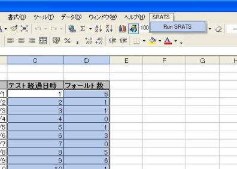
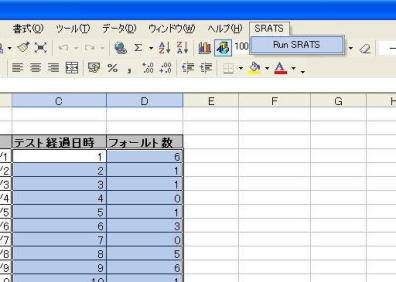
図２：メイン画面
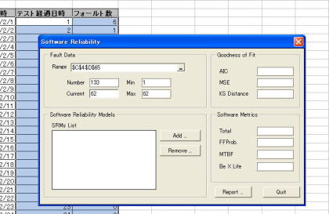
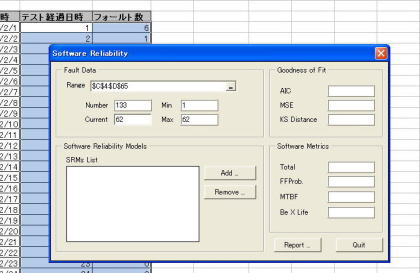
データ選択
フォールトデータは Excel のシートから入力形式となります．データの形式は縦方向のセルに時系列のデータとして入力し，２つの系列を選択した場合は自動的に個数データ，１つの系列を選択した場合はフォールト発見時刻データと判断されます（図３，４）
．ただし，何れの場合においても時刻は累積時刻であることに注意して下さい．図１，３，４の例ではメイン画面を起動する前にデータを選択いますが，メイン画面を起動後にデータ範囲を選択することも可能です（メイン画面の説明参照）．
図３：個数データの例
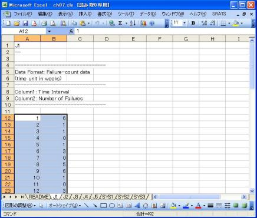
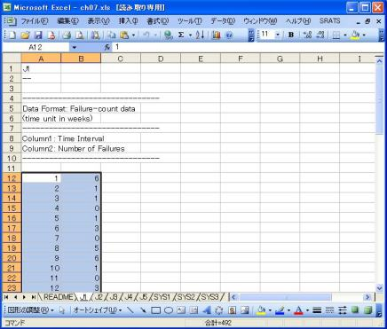
図４：時刻データの例
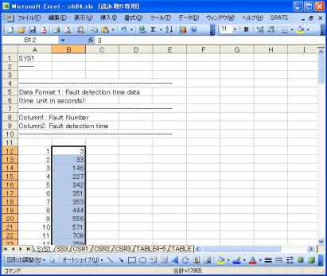
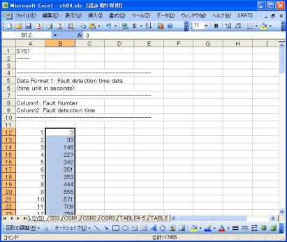
モデル選択
メイン画面の「Add」ボタンをクリックすることで，モデル選択画面が表示されます（図５）．モデル選択画面上で信頼性モデルを選択（ダブルクリック）することで，フォールトデータに適用するモデルとして追加され，同時にパラメータ推定画面が表示されます．ここの例では「ExpSRM」を選択しています（図６）．また，モデル選択画面上で，「OK」ボタンをクリックするとモデル選択画面を閉じるだけで，適用モデルが選択されないので注意して下さい．モデル式の一覧はこちらです．
図５：モデル選択画面
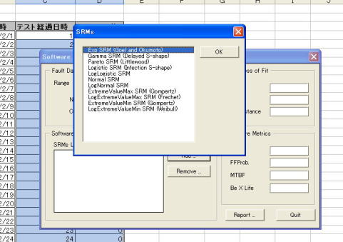
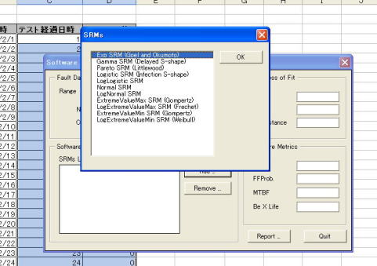
図６：パラメータ推定画面
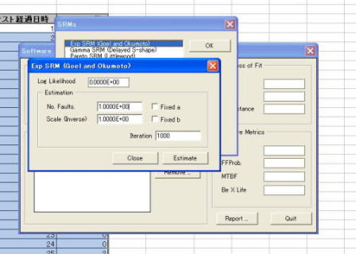
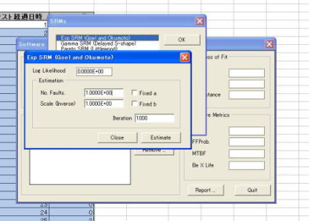
パラメータ推定
選択したフォールトデータに適用したモデルをフィットさせるために，パラメータ推定を行います．パラメータ推定はパラメータ推定画面上で行い，適用している信頼性モデルそれぞれが図６に示すような画面を持っています．パラメータ推定画面では予め適当な初期パラメータがセットされているので，通常はそのまま「Estimate」ボタンを押すことによってデータにフィットするパラメータを算出します（図７）．算出されたパラメータは中央の項目にセットされます（図８）．ここの例では「No.
Faults」と「Scale (Inverse)」に結果（推定されたパラメータ）がセットされています（図８）．この状態からさらに「Estimate」ボタンを押すと，セットされたパラメータを初期値として推定を続けることになります．画面上の「Fix」はチェックを入れることで，現在入力されている値にパラメータを固定します．つまり，既に値がわかっているパラメータがある場合はユーザが直接値を入力して「Fix」にチェックを入れることで，推定による値の変化がなくなります（Gamma SRMなど既に「Fix」にチェックが入っているモデルもあるので注意して下さい）．
また，「Iteration」は推定アルゴリズムにおける繰り返し回数で，一回「Estimate」ボタンを押す毎に何回計算するかを示しています（デフォルトでは 1000 回です）．最終的にきちんとパラメータが推定できたかどうかは画面上部の「Log Likelihood」（対数ゆう度）で判断します．つまり「Estimate」ボタンを押しても「Log Likelihood」の値が変わらなくなることで（もしくは推定されたパラメータが変わらなくなることで）推定が完了したかどうかを判断します．
※フォールトデータによっては「Estimate」ボタンを押す毎に常に推定されたパラメータが変化する場合がありますが，これは「Log Likelihood」の値からユーザがどこで推定を打ち切るか判断して下さい．
推定が完了したら「Close」ボタンを押してパラメータ推定画面を閉じると，モデル選択画面（あるいはメイン画面）に戻ります．ここから続けて新たなモデルを適用することも可能です．また，パラメータ推定画面はメイン画面から適用されているモデルをリストから選択（ダブルクリック）することで表示させることも可能です．
図７：推定の様子
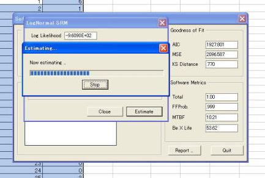
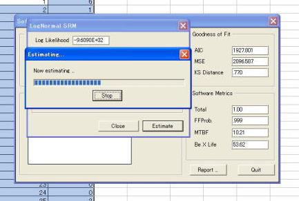
図８：推定後のパラメータ推定画面
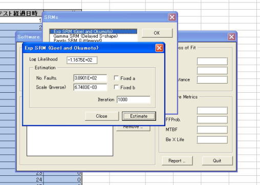
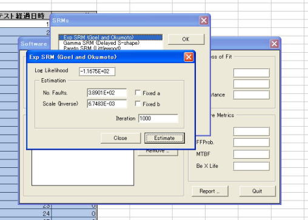
信頼性評価
SRATSの特徴の一つとして，複数の信頼性モデルを同時に適用することが可能です．信頼性モデルを適用しパラメータ推定を行うことにより，ソフトウェアの信頼性に関するいくつかの尺度をメイン画面上で確認することができます（図９）．ここの例では
ExpSRM と Littlewood SRM の二つのモデルを適用しています．リストにあるモデルを選択（シングルクリック）することによって，対応する尺度がメイン画面の右側に表示されます．メイン画面の右側にある「Goodness of Fit」はモデルがデータにどれくらい適合しているかを示す指標で，「AIC」，「MSE」，「KS Distance」の値が小さいものほどデータによくフィットしていることを示しています．これらは，最終的に複数適用した信頼性モデルのうち，どれを採用するかを判断するための指標として利用されます．また，「Software Metircs」には信頼性に関する尺度として「Total」，「FFProb」，「MTBF」，「Be X Life」が表示されます．これらはそれぞれ次の量に関する予測値となっています．
- Total: 対象とするソフトウェアに潜在する総フォールト数
- FFProb: 現時点で対象とするソフトウェアにフォールトが存在する確率
- MTBF: 次のフォールトが発見されるまでの時間
- Be X Life: 次のフォールトが発見される確率が０．９となる時間
（その時間までに１つ以上のフォールトが発見される確率が９割）
図９：メイン画面上でのモデル比較

レポート出力
SRATS では詳細な結果を Excel シートに出力することができます．メイン画面上にある「Report」ボタンをクリックするとレポート出力画面が表示されます（図１０）．ここでは結果を出力するシートの名称，および累積フォールト数（「Make
Graph of Mean Value Func.」）と信頼度（「Make Graph of Reliability」）のグラフを作成するかどうかをチェックします．レポート出力画面上の「OK」ボタンを押すことでシートへの出力（図１１）およびグラフの作成（図１２，図１３）を行います．図１０：レポート出力画面
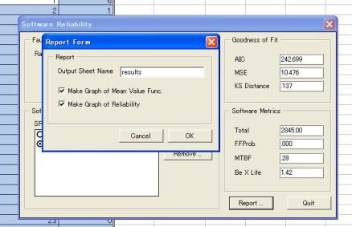
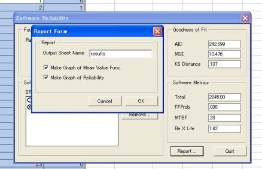
図１１：レポートの例
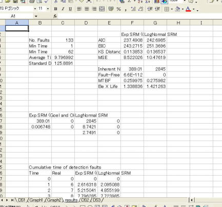
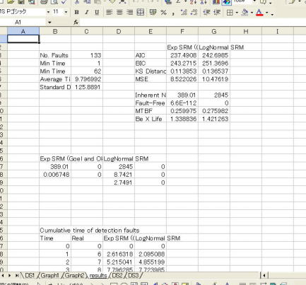
図１２：累積フォールト数のグラフ
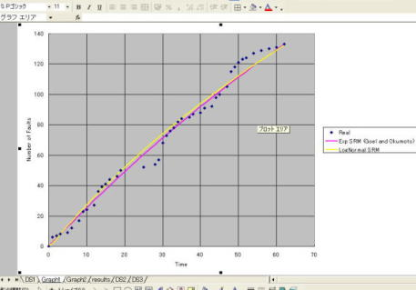
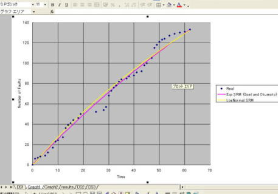
図１３：ソフトウェア信頼度
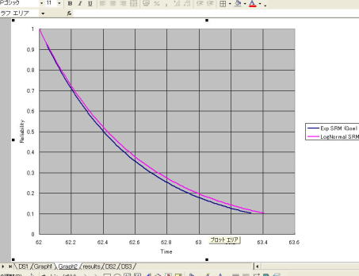
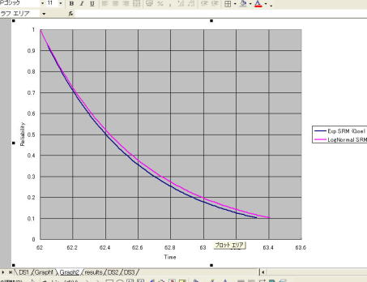